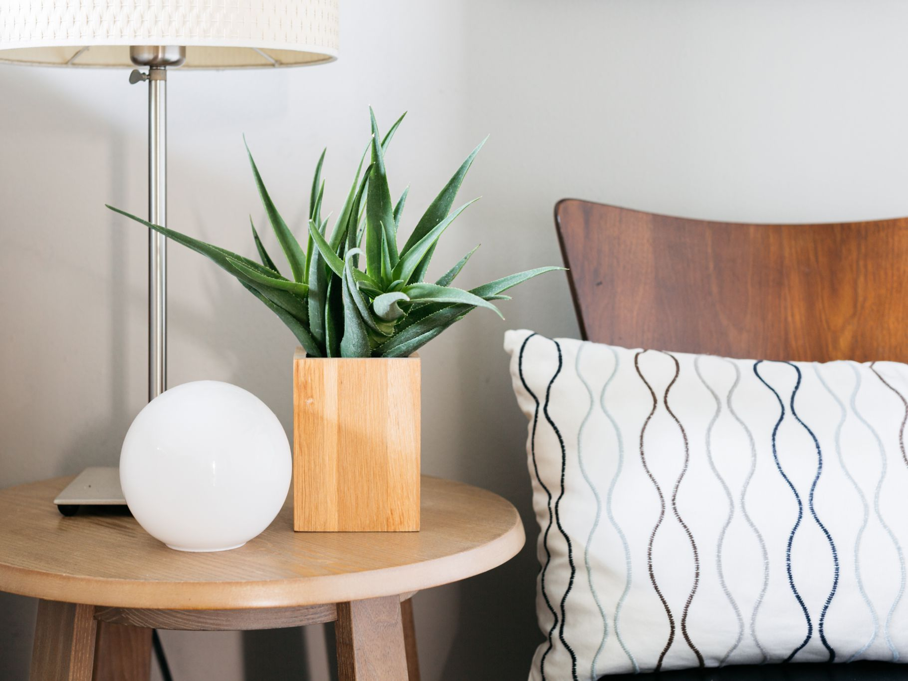

July 19, 2019 | 3 comments
Finding simplicity in life
Finding simplicity in life Life can get complicated really quickly, but it doesn't have to be! There are many ways to simplify your life, a few of which we've explored in the past. This week we're taking a bit of a approach though, in how you can find simplicity in the life you already living. continue reading
Continue reading